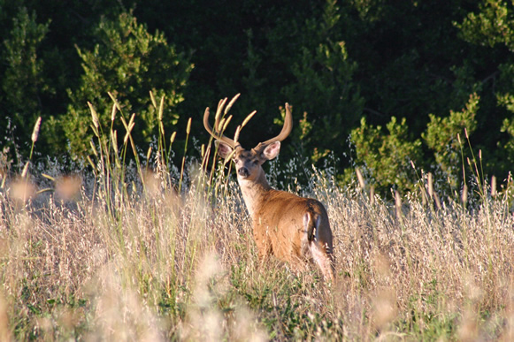
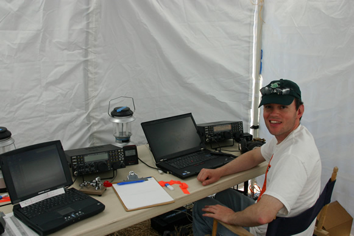
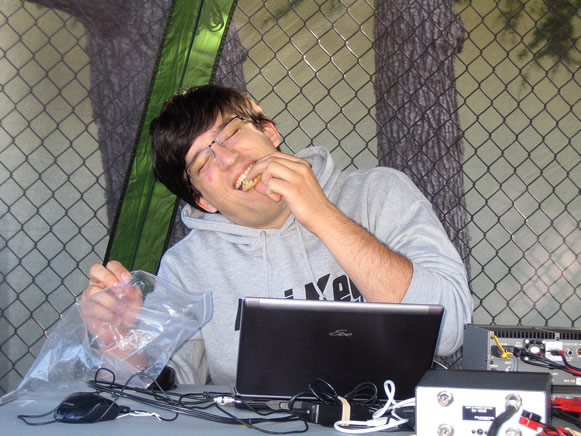

WVARA Field Day, 25-27 June 2011
Another Awesome Field Day!
2011 President's Field Day Letter
Field Day is a great opportunity to get outdoors, gain experience assembling equipment in the rough, and operate a station under challenging band conditions. This year we operated QRP in the 7A Battery category from Mora Hill in Los Altos, California, overlooking the Silicon Valley from an elevation of 500 feet. (Our site was visited by deer and wild turkeys during the weekend.)
We had 3 HF CW stations, 3 HF SSB stations, an HF digital station, a Get On The Air (GOTA) station, a satellite station, and a VHF station. In spite of being limited to 5 watts, we succeeded in making three satellite contacts as well as QSOs on 50 MHz with Vermont, Virginia, Colorado and Western Washington.
Our GOTA station was particularly popular with plenty of drop-in visitors including a good number of kids. Older visitors included a couple of enthusiastic college students from Cal Poly who stuck around and operated graveyard shift on 20m SSB.
In addition to having a great time, each year we work at improving our equipment, antennas and operating skills. This year we used two homebrew HF triplexers to simultaneously share a pair of HF tribanders between multiple stations on 10- 15- and 20 meters. If youíd like to build one, you can read all about how to do it in K6KVís article in the June 2010 issue of QST.
Since we had CW, SSB and PSK-31 stations simultaneously operating on 20 meters, we took care to have HF transceivers with well-designed front-ends in order to minimize spur transmissions and receiver pumping/desensing. The majority of our siteís stations used Elecraft K3 and/or K2 transceivers.
Being outdoors also meant that we got to put up wild-n-crazy antennas that our spouses and neighbors might never allow back home. Cool new antennas at our site this year included a 40 meter, crossed, switchable, self-supporting dipole array, crossed (switchable) dipoles on 80, and 4-element monobanders on 15- and 20 meters. This was also the second year we used a 2-element 40 meter quad, which continued to perform very well. We appear to have worked all 50 states while handily beating our score from 2010.
73, Jim K6EI
Waiting to begin setting up on Friday.
Photo by Anita.
We start by putting up antennas: installing the 15 meter yagi. Photo by Bill AE6JV.
Photo by Senthil KJ6KCG
Nick KZ2V setting up AB-577 portable mast. Photo by Anita.
80 meter wire antenna.
Photo by Anita.

Nick KZ2V continues setting up AB-577.
Photo by Gary K6KV.
It may be hard to see the white wires suspended from the yagi boom, but this was our full-sized 2 element 40 meter quad.
Photo by Anita.
Our GOTA station and antenna.
Photo by Anita.

Our three CW stations operated from inside a mylar-coated tent. The mylar reflected away the sun’s heat and kept out the sun’s glare. Our four element 20 meter monobander was mounted on top of a 50 foot AB-577 portable mast. Photo by Kevin KK6VF.
Sunset with the 40 meter switchable crossed-dipole array in the background. Photo by Bill AE6JV.
Photo by Senthil KJ6KCG
Our FD site from a distance.
Photo by Kevin KK6VF.
The VHF/UHF and Digital stations.
Photo by Anita.
Mike KG6YMN can’t wait for the start of the event!
Photo by Kevin KK6VF.
Jack W6FB and son Mike KG6YMN decide who will operate first. Photo by Kevin KK6VF.

Our first visitor!
Photo by Kevin KK6VF.
More visitors on the way, heading to the GOTA station. Photo by Kevin KK6VF.

Dean, N6DE, busy in the CW tent.
Photo by Kevin KK6VF.
Greg K6XM (left-front), Dean N6DE and Nick KZ2V (right) operating CW. Photo by Kevin KK6VF.
Tom W6ESL Operating VHF/UHF.
Photo by Marcel KI6QDJ.
Jerry KJ6OYA and Dave AF6KD making their third sat- ellite QSO while running 5 watts. Photo by Bill AE6JV.
Nick KZ2V and Rick WE6AAI discuss the fine art of making QSOs with a straight key. Photo by Bill AE6JV.
Jessica Ibarra on the air in the GOTA tent!
Photo by Bill AE6JV.
Radio activity in the GOTA tent: Senthil KJ6KCG coaches a visitor. Photo by Bill AE6JV.
Scott AD6RY and Senthil KJ6KCG operating SSB.
Photo by Kevin KK6VF.

A young operator on the air.
Photo by Gary K6KV.
Rick WE6AAI bags another CW QSO. from the GOTA tent! Photo by Anita.

Kenneth W6KWF operates PSK during dinner break.
Photo by Anita.
Senthil KJ6KCG operating SSB.
Photo by Bill AE6JV.
Taking a break for dinner.
Photo by Kevin KK6VF.
Chocolate chip cookies keep the team going.
Photo by Anita.
CW tent during graveyard shift. Lights from Silicon Valley are visible down the hill. Photo by Bill AE6JV.
Moonrise over the SSB tents.
Photo by Bill AE6JV.
WVARA Field Day at Mora Hill during graveyard shift. Photos by Marcel KI6QDJ.

WVARA Field Day at Mora Hill during graveyard shift. Photos by Marcel KI6QDJ.
The tired but happy WVARA team at the end of Field Dat. Photo by Anita.
Heading home with the tower trailer. Photo by Anita.